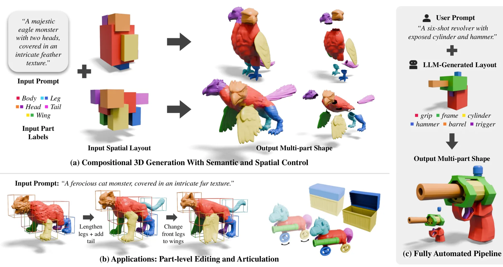
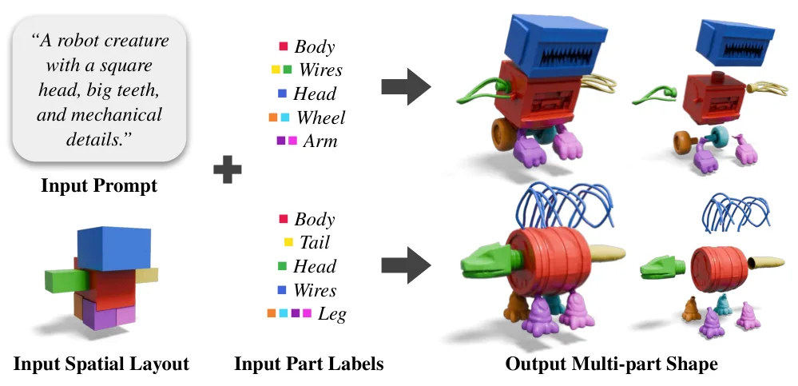
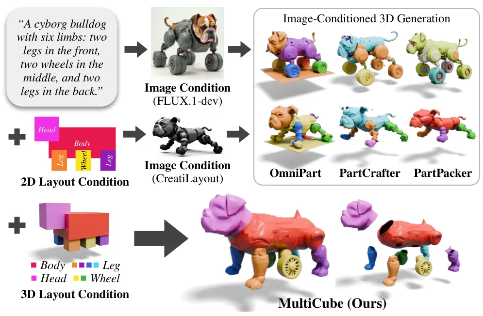
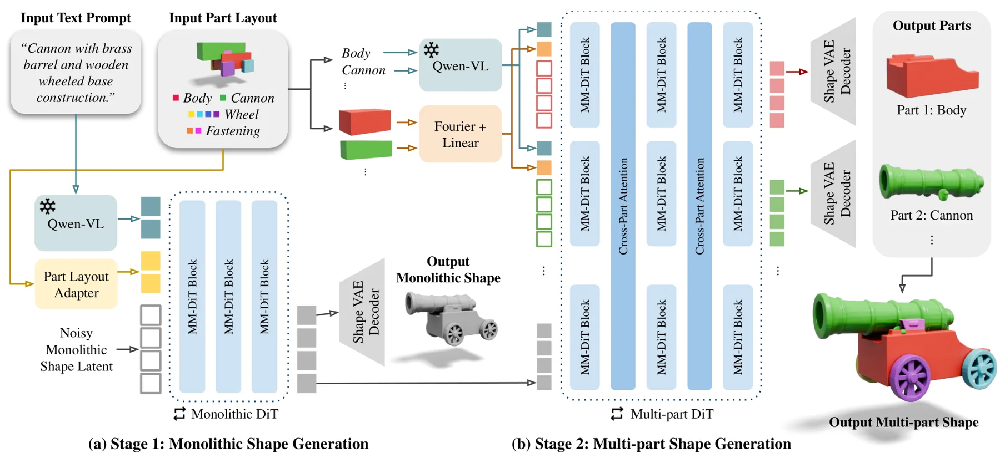
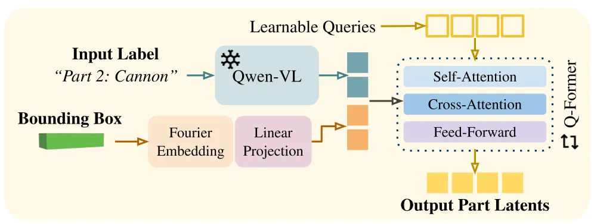
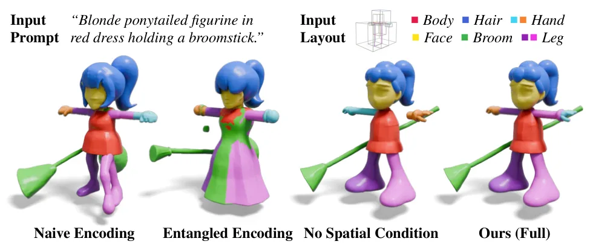
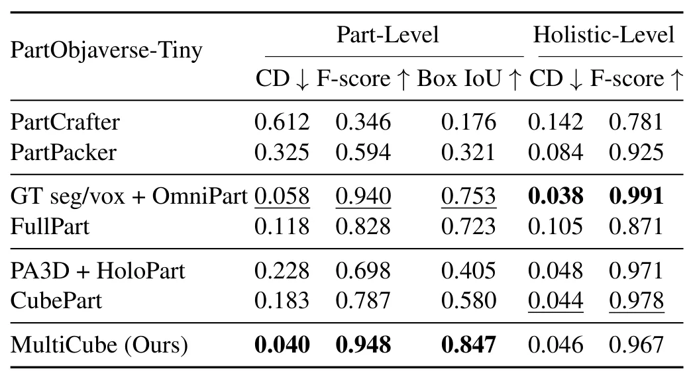

MultiCube：具有部件级语义与空间控制的组合式三维生成MultiCube: Compositional 3D Generation With Part-Level Semantic and Spatial Control
属于三维网格生成和空间控制，与重建主线相邻，但不直接涉及 SLAM、定位或几何配准。
一句话工作总结
面向可编辑组合式资产的部件级三维生成，适合作为网格分解、空间约束和语义三维表示的旁支跟踪。
摘要
MultiCube 接收全局文本、部件 schema 和各部件边界框布局，输出由独立网格部件组成的三维对象。方法先生成符合 schema 与布局的整体网格，再同步分解为多个部件，并通过 Part Layout Adapter 独立编码各部件条件，从而提供比全局文本或图像提示更精确的部件语义和空间控制。
Digital 3D objects used in games and animation are often required to be compositional; that is, decomposed into semantically meaningful parts. Recent 3D generation methods can produce high-quality compositional objects conditioned on image or text prompts. Yet, such global conditioning lacks the precise part-level controllability required for professional creative workflows. To address this, we introduce MultiCube, a novel compositional 3D generation method that provides explicit, independent control over both the semantics and spatial arrangement of each part. MultiCube takes as input a global text prompt, a text schema specifying the desired parts, and a spatial layout indicating the bounding boxes of the parts in the given schema. It outputs a 3D object composed of distinct meshes, one per specified part, that adhere to the given semantic and spatial conditions. Our approach employs a two-stage diffusion process, first generating a schema- and layout-aligned monolithic mesh, then decomposing the mesh into individual parts simultaneously. A novel Part Layout Adapter is used to encode per-part conditions independently of the other parts. Experiments demonstrate that our method can generate high-quality compositional 3D objects with precise part-level control, including those with unique layouts difficult to achieve with text or image prompting alone. Project page: https://multi-cube.github.io
中文解读摘录
- 中文名：TopoSurfel：连接高斯曲面元与网格的闭环表面重建
- 方向：3DGS、表面重建、网格、可微几何；代码链接见论文页。
- 要点：以不可训练的可微等值面提取构造连续代理网格，再用网格引导曲面元演化，结合法线对齐和几何感知密度控制抑制漂浮点、填补孔洞，并以空间感知混合重初始化增强大场景稳定性。
- 判断：今日与三维重建主线最直接相关，值得优先阅读其网格提取、优化稳定性和复杂场景实验。
图表/页面预览
{kind=link}

{kind=link}

{kind=link}

{kind=link}

{kind=link}

{kind=link}

{kind=link}
